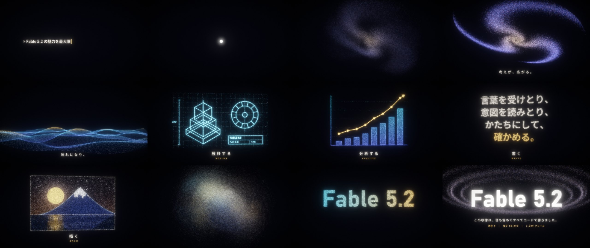

一行の依頼から、9万の光へ。
上の一行が、実際にAIへ頼んだ言葉です。素材は使わず、映像も音楽もプログラム1本で生成しました。つまり、この動画そのものが実演です。9万個の光の粒が最後まで途切れずに、渦、波、設計図、グラフ、文章、絵へと姿を変えていきます。
| 0–6 | 依頼 | 依頼文が1文字ずつ打たれ、文字が粒になって1つの光の点に縮む |
| 6–10 | 広がる | 点がはじけて、渦を巻く銀河になる。「考えが、広がる。」 |
| 10–16 | 流れる | 銀河がほどけて、奥まで続く波の面になる。「流れになり、」 |
| 16–20 | 設計する | 粒が集まって、建物と歯車の設計図になる |
| 20–24 | 分析する | 右肩上がりの棒グラフと折れ線になる |
| 24–28 | 書く | 「言葉を受けとり、意図を読みとり、かたちにして、確かめる。」 |
| 28–32 | 描く | 月と富士山と、水面に映る光の絵になる |
| 32–40 | 締め | 「Fable 5.2」のロゴに集まり、粒は輪になって回り続ける |

Claude Code（モデルは Fable 5.2）に上の一行で依頼し、方向性を二言三言やりとりしたあとは、構成・映像・音楽・書き出しまでAIが担当しました。Python（numpy と Pillow）で1,200コマを1枚ずつ計算し、ffmpegでMP4にまとめています。全コマの描画にかかる時間は約2分。プログラムは src/fable.py の1ファイルです。